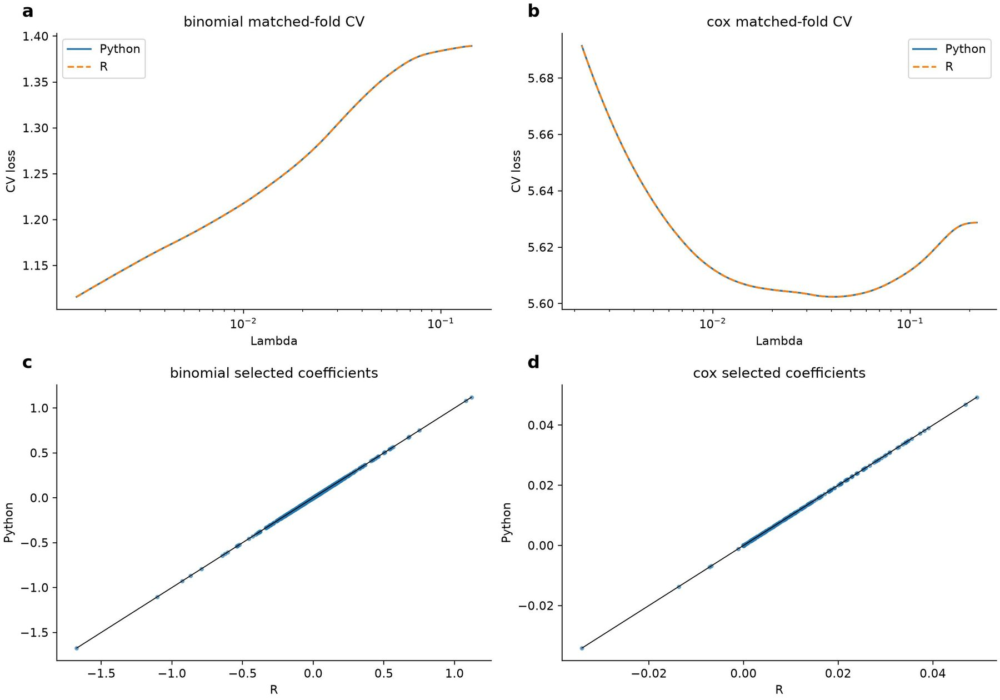
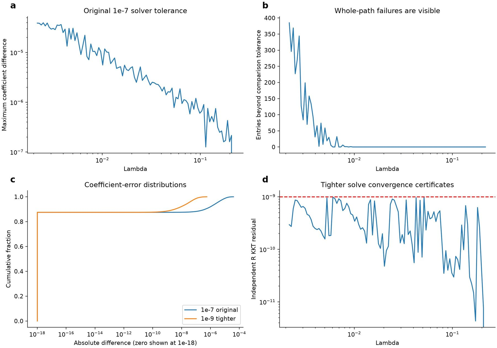
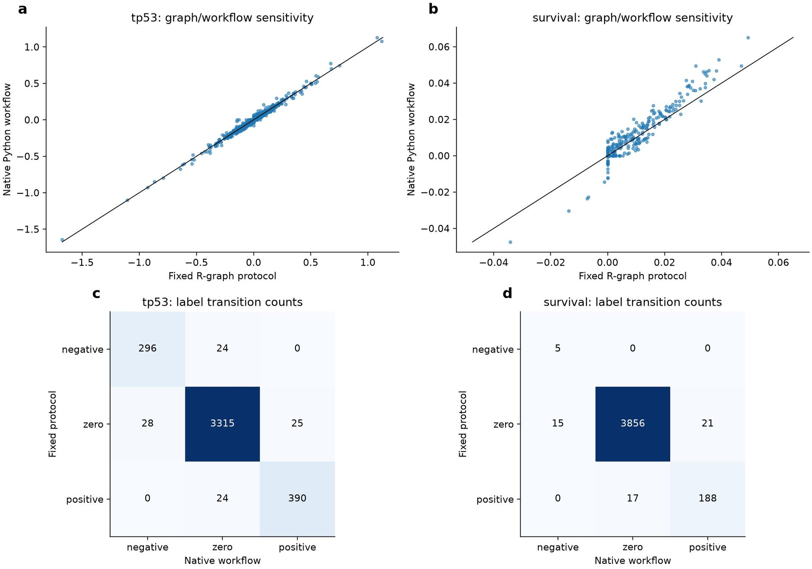

Scissor: matched-input validation and native-workflow boundaries
Affiliations
- 1 School of the First Clinical Medical Sciences, Wenzhou Medical University, Wenzhou 325000, China
- 2 Department of Genetics, Stanford University, Stanford, CA 94305, USA
- 3 OmicVerse, Inc., San Francisco, CA 94114, USA
OmicVerse Technical Reports (2026)Cite this article
Download PDFAbstract
We compare real LUAD Scissor results under fixed inputs and distinguish official binomial from corrected Cox semantics. Selected models agree, while the original full Cox path exceeds its coefficient tolerance at 3,092 entries. Tightening the solver threshold from 1e-7 to 1e-9, without changing the comparison tolerance, reduces whole-path failures to zero and maximum coefficient difference to 5.64e-7. Independent R KKT certificates support convergence. Native-graph results and original cross-validation are reported separately; tighter-threshold CV was not rerun.
- Scissor
- LUAD
- R
- Python
- validation
Introduction
Scissor connects a bulk phenotype to single-cell expression by fitting a sparse, network-regularized model of cell-to-bulk similarities1. Positive and negative coefficients identify cells associated with opposite directions of the modeled phenotype. The method therefore depends on more than a solver: expression preprocessing, shared genes, cell/sample alignment, graph construction, phenotype encoding and cross-validation all define the numerical problem.
This report examines a native Python implementation on real LUAD inputs used in the accompanying tutorial. It separates three questions. First, do R and Python agree when expression, graph, folds and semantics are fixed? Second, does their full fitted coefficient path agree to the declared tolerance, rather than only the selected model? Third, how different are results from a native Python graph workflow? These questions require different comparisons and should not be conflated in a single successful coefficient scatter.
The report also distinguishes official binomial behavior from corrected Cox semantics. The latter is checked against a corrected reference oracle, not presented as agreement with every behavior of unmodified historical R code. This distinction is necessary for reproducibility and for interpreting what a validation actually certifies.
Numerical problem and implementation boundary
Input preparation and graph penalty
Bulk and single-cell expression are matched on shared genes before calculating sample-by-cell similarities. The LUAD single-cell input contains 4,102 cells. Filtering and normalization order matters because changes to retained genes can change both normalized expression and correlations. A counts layer or familiar object name does not guarantee that two pipelines received the same matrix. The matched comparison therefore exports and verifies numerical inputs rather than relying on equivalent-looking preprocessing calls.
The cell graph couples coefficients through a normalized adjacency matrix. Diagonal entries are removed, edges are made binary under the tested convention, and normalization uses inverse square-root degrees. In the corrected objective, the graph contribution is proportional to the quadratic form involving the identity minus normalized adjacency. A sparse penalty promotes cell selection. Gaussian, binomial and Cox losses have distinct conventions; results from one family do not automatically validate the others.
For Cox fitting, the reference explicitly evaluates risk sets, event times and gradients. Its independent certificate computes the objective and maximum KKT residual from the returned coefficients rather than trusting solver-internal convergence flags alone. The Python numerical kernel and the R/C++ oracle are separate implementations of the corrected problem. Their agreement supports that specified problem, not an unrestricted claim that every historical bug or default is reproduced.
Cross-validation versus a fitted path
The matched LUAD experiments share fold identifiers and a regularization sequence, then compare CV means, selected lambda and refitted coefficients. A full-data path contains coefficients at every tested lambda, including models that are never selected. Passing a selected refit does not prove that all of these unused models pass the same coefficient tolerance.
Conversely, a discrepancy in coefficients can depend on solve accuracy even when prediction or selection changes little. We therefore keep the original solver-threshold comparison and add a tighter-solve experiment. The acceptance rule remains fixed: absolute tolerance 1e-5 plus relative tolerance 1e-4 for coefficients. Tightening the solver is different from relaxing this comparison rule. The new experiment refits the full-data path; it does not rerun every CV fold at the tighter threshold.
Data and reference protocol
The real LUAD inputs comprise single-cell expression, bulk TP53 status and bulk survival. The reference archive pins historical Scissor source at 311560a1f160f665917e7da0fcf289914ee99773 and the separate development reference archive at 2cb65ba5af3e1ffac05226f66d0e0ddf1eb7dc50. File hashes cover input H5AD objects, the exported R graph and numerical similarity matrices. The survival similarity matrix has 471 samples by 4,102 cells; the full path contains 100 lambda values.
TP53 uses official binomial semantics with alpha 0.2. Survival uses corrected Cox semantics with alpha 0.05. Graph and folds are fixed for the R/Python replication. The existing ten-fold CV results use solver threshold 1e-7. Preprocessing maximum absolute differences were approximately 2.78e-15 for TP53 and 2.66e-15 for survival, supporting equality of the exported numerical inputs to floating-point precision.
For the additional experiment, both implementations fit the same full-data Cox path at solver threshold 1e-9, using the previously specified lambda sequence and graph. The R reference independently recalculates convergence certificates. Results are saved separately from the original threshold outputs so that failure at the original setting remains visible. No new biological data or outcome-derived tuning was introduced to make the comparison pass.

Results
Selected models under the original comparison
The matched TP53 analysis selected 414 positive and 320 negative cells in both languages, with no signed-label disagreements. Maximum coefficient difference was 1.07e-14 and maximum CV mean difference 4.88e-15. The selected lambda was 0.0014298594846270164 in both outputs. Positive- and negative-set Jaccard indices were one.
The matched corrected-Cox analysis selected 205 positive and five negative cells in both languages. Maximum selected-coefficient difference was 1.21e-6 and maximum CV mean difference 6.14e-6. The selected lambda agreed within the declared comparison tolerance at approximately 0.0407557335442673. Selected labels agreed exactly. CV means passed absolute tolerance 1e-6 plus relative tolerance 1e-4; that combined criterion should not be confused with an absolute-only 1e-6 rule.
These results support the matched selected models, but the original full Cox path had a different outcome. Of 410,200 coefficient entries, 3,092 exceeded the fixed coefficient tolerance at solver threshold 1e-7. Maximum absolute difference was 3.96e-5. This result was retained as a failure rather than hidden behind the selected-model success.
Tighter solves resolve the measured full-path discrepancy
At solver threshold 1e-9, all 410,200 coefficient entries passed the same comparison tolerance. Maximum absolute R/Python coefficient difference decreased to 5.64e-7, and coefficient signs agreed at every path position. The maximum independently evaluated R KKT residual was 9.91e-10, with all R fits certified converged. Thus the tested full-path discrepancy was reduced by increasing solve accuracy, without changing the acceptance threshold or the numerical inputs.
| Quantity | Threshold 1e-7 | Threshold 1e-9 |
|---|---|---|
| Lambda values | 100 | 100 |
| Coefficient entries | 410,200 | 410,200 |
| Maximum absolute difference | 3.96e-5 | 5.64e-7 |
| Entries beyond atol=1e-5 + rtol=1e-4 | 3,092 | 0 |
| Independent R maximum KKT residual | Not re-summarized here | 9.91e-10 |
| New ten-fold CV run at this threshold | Existing original run | No |

The R tighter-path run took approximately 639 seconds including its certificate work. That runtime should not be compared directly with a Python timing that excludes equivalent independent certificates, nor should it be presented as a production speed benchmark. It is evidence about the cost of this validation procedure on this workstation. A controlled performance comparison would require aligned workloads and repeated timing.
Native workflow sensitivity
The corrected native tutorial also executes, but it constructs its own graph and is a separate workflow. It uses 5,662 shared genes and selects 415 positive and 324 negative cells for TP53; survival selects 209 positive and 20 negative cells. These numbers differ from the matched-R-graph protocol. A different graph changes the penalty and can legitimately change coefficients, so native counts must not be placed in the same table as if they were another execution of identical inputs.
Figure 3 compares native and fixed-protocol coefficients and signed labels directly. This is a sensitivity analysis of the complete workflow, not a controlled attribution of every difference to one graph edge or one preprocessing step. To isolate a cause, only that component would need to change while other inputs were held fixed. The current comparison is useful precisely because it makes the practical distinction visible rather than claiming that every tutorial output should match an R figure pixel for pixel.

Interpretation and remaining limitations
The added experiment closes the previously observed full-data path tolerance failure for this LUAD case at the tighter solver setting. It does not retroactively turn the 1e-7 path into a pass, nor establish that every dataset or tolerance will behave similarly. Users requiring coefficient-level reproducibility should record the stopping threshold, graph convention, phenotype encoding and input alignment, rather than citing only the package version.
The analysis covers one real single-cell cohort and two bulk phenotypes. It does not validate Gaussian behavior here, multiple cancer cohorts, arbitrary graph construction or causal biological interpretation of selected cells. Corrected-Cox agreement is with the corrected oracle; it must not be described as unmodified historical-R replication. Full tighter-threshold CV, repeated graph/fold perturbations, systematic memory profiling and independent phenotype validation remain separate extensions.
The selected populations are associations conditional on the bulk phenotype and model. A signed coefficient does not identify a causal driver, and agreement between implementations is not evidence of clinical utility. The report therefore makes numerical and workflow claims while retaining the distinction between reproducibility and biological validation.
Data and code availability
The reproduction bundle contains the recorded inputs, reference outputs, scripts and environment details.
Python source is available at https://github.com/omicverse/py-Scissors, with upstream Scissor at https://github.com/sunduanchen/Scissor. The existing audit bundle preserves input hashes, R/Python matrix exports, graph, folds, CV tables, coefficient arrays and executed tutorial. The new cox_tolerance.R and cox_tolerance.py scripts generate separate tighter-path outputs; the figure script combines them with the original evidence. Hardware was an Intel Core Ultra 9 285K Windows workstation. This report does not announce a software release or alter the original comparison tolerances.
Conflicts of interest
H.Z. and Z.Z. are affiliated with OmicVerse, Inc.
Use of AI tools
AI assistance was used for code inspection, experiment scripting, visualization and drafting. The authors approved submission of this scoped technical report.
References
- 1.Sun D et al. (2022). Identifying phenotype-associated subpopulations by integrating bulk and single-cell sequencing data. Nature Biotechnology 40, 527–538. 10.1038/s41587-021-01091-3
- 2.Virtanen P et al. (2020). SciPy 1.0: fundamental algorithms for scientific computing in Python. Nature Methods 17, 261–272. 10.1038/s41592-019-0686-2
- 3.Harris CR et al. (2020). Array programming with NumPy. Nature 585, 357–362. 10.1038/s41586-020-2649-2
- 4.Zeng Z et al. (2024). OmicVerse: a framework for bridging and deepening insights across bulk and single-cell sequencing. Nature Communications 15, 5983. 10.1038/s41467-024-50194-3
Supplementary information
Numerical comparison procedure
Load binary matrices with the recorded dimensions and column-major order, and assert the expected file size. Compare identifiers before coefficients. Preserve lambda order when loading a path matrix; transposed or permuted paths can produce meaningless aggregate errors even if dimensions match. Compute the tolerance per coefficient as 1e-5 plus 1e-4 times the absolute reference value, and retain both the count of failures and maximum absolute error.
For the tighter run, reuse the original full-data lambda sequence rather than selecting a new favorable interval. The R oracle normalizes the graph according to the tested convention and independently recomputes objective/KKT quantities. Original CV and native-workflow artifacts are read without overwriting them. The report keeps distinct labels for selected-model, full-data-path and native-workflow evidence so that improvement in one cannot silently be generalized to the others.
Author information
Affiliations
- 1 School of the First Clinical Medical Sciences, Wenzhou Medical University, Wenzhou 325000, China
- 2 Department of Genetics, Stanford University, Stanford, CA 94305, USA
- 3 OmicVerse, Inc., San Francisco, CA 94114, USA
Corresponding authors
Correspondence to Zehua Zeng.
Cite this article
Zhu, H. & Zeng, Z. Scissor: matched-input validation and native-workflow boundaries. OmicVerse Technical Reports (2026). https://omicverse.org/articles/scissor-validation
@techreport{zhu2026scissorvalidation,
title = {Scissor: matched-input validation and native-workflow boundaries},
author = {Zhu, Haoliang and Zeng, Zehua},
institution = {OmicVerse},
type = {Technical Report},
year = {2026},
url = {https://omicverse.org/articles/scissor-validation}
}